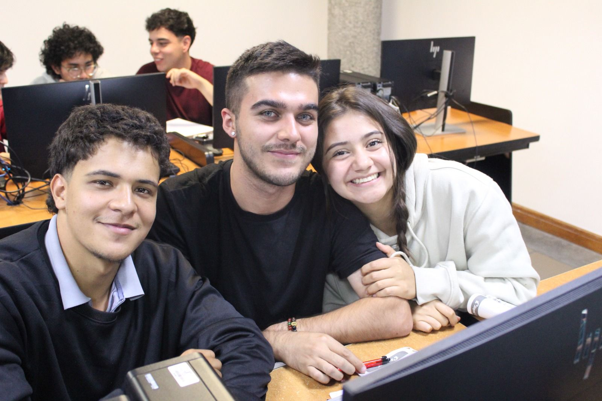

¡Bienvenido a mi página web!
¿Quién soy?
Mi nombre es Valeria Mora Cárdenas. Nací el 3 de julio de 2004 en Manizales.
Actualmente tengo 21 años y vivo con mis padres, Francisco Javier Mora y Jenni Cárdenas,
y mi hermana Alisson Mora Cárdenas, quien tiene 7 años. También tenemos dos gatos llamados
Princesa y Copito.
Soy estudiante de Administración de Sistemas Informáticos y estoy cursando mi octava matrícula
en la Universidad Nacional de Colombia, sede Manizales.

Sobre mí
Soy una persona curiosa y práctica. Me gusta entender cómo funcionan las cosas, desde temas
técnicos y tecnológicos hasta situaciones cotidianas, y suelo buscar explicaciones claras antes
de actuar. Valoro mucho el aprendizaje, tanto académico como personal.
También tengo un lado competitivo y comprometido con el deporte y el trabajo en equipo, aunque
soy consciente de mis límites y de la importancia de cuidar mi bienestar emocional. Cuando algo
me genera estrés o deja de alinearse con lo que quiero, me tomo el tiempo para reevaluar y decidir
qué es mejor para mí.
En general, me describo como alguien responsable, con interés por mejorar constantemente y con
una mezcla de pensamiento crítico y sensibilidad social que influye en cómo interpreto lo que
aprendo y vivo.
Mi formación en Administración de Sistemas Informáticos me ha permitido comprender la
relación entre la tecnología y los procesos organizacionales. Me interesa cómo los sistemas
digitales pueden optimizar tareas, mejorar la toma de decisiones y aportar eficiencia.
Disfruto aprender sobre nuevas herramientas tecnológicas y aplicarlas de manera práctica en
proyectos académicos y personales.
Actualmente estoy fortaleciendo habilidades relacionadas con bases de datos, fundamentos de
redes, desarrollo web y organización de información. Me enfoco en comprender la lógica
detrás de cada herramienta para construir soluciones estructuradas y funcionales. Considero
que el aprendizaje constante es clave en el área tecnológica.
Mi proceso de aprendizaje y crecimiento se basa en la reflexión constante sobre mis
experiencias académicas y personales. Me esfuerzo por aprender de mis errores, adaptarme a
nuevas situaciones y seguir desarrollando habilidades técnicas y blandas. Creo firmemente en
el valor del crecimiento continuo.
Mi objetivo es desarrollarme como profesional integral en el área tecnológica, aportando
soluciones que generen impacto positivo en organizaciones y comunidades. Aspiro a participar
en proyectos que integren innovación, eficiencia y responsabilidad social.
A futuro, deseo especializarme en áreas que combinen gestión tecnológica y optimización de
procesos. Me motiva construir soluciones que simplifiquen tareas complejas y contribuyan a
entornos más organizados, eficientes e innovadores.